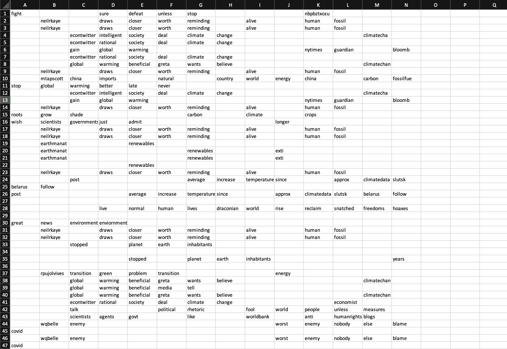
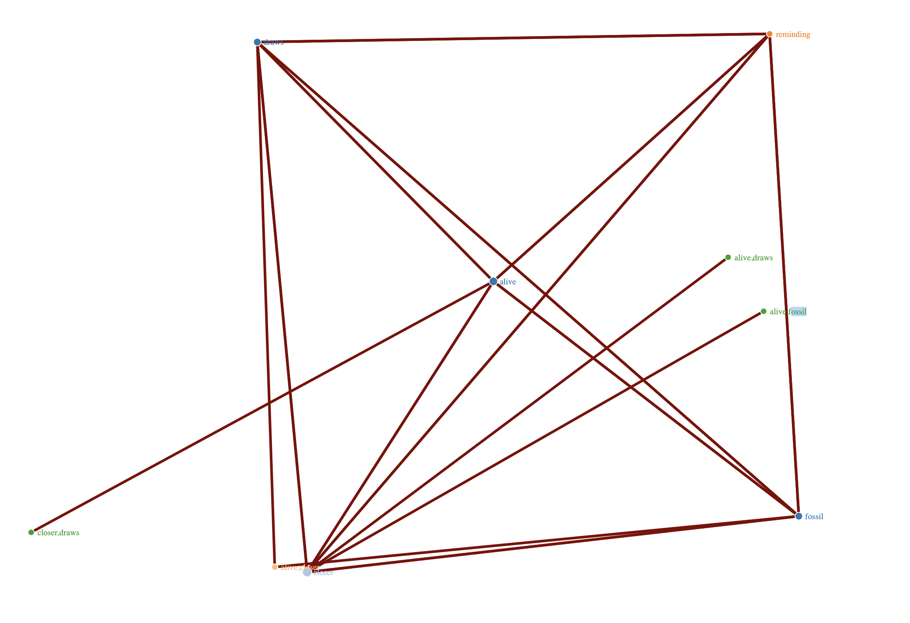
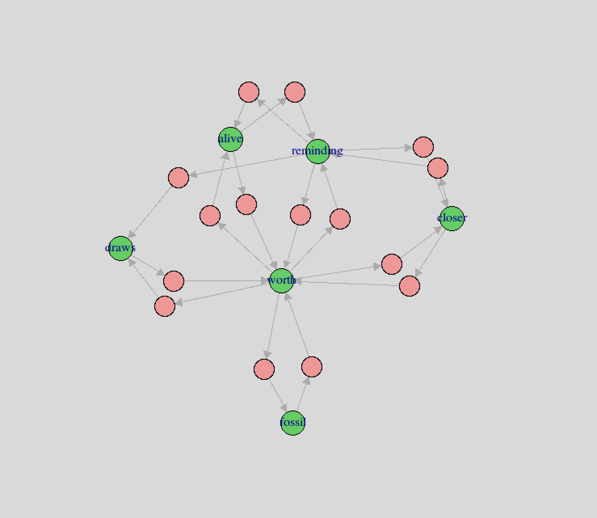

ARM AND NETWORKING.
Introduction
In this section, we’ll be preparing “transaction data” that’ll be used to perform Association Rule Mining (ARM). We’ll gather tweets and format it as transaction data using only R. Next, we will get the top 15 rules for support, confidence, and lift (explained later) and take a deep dive into understand what it means in the scale of association. Finally, we will generate 3 network graphs (a few interactive) that’ll allow us to visualize how different words are associated to each other via a D3 Network in R.
Code
The code in R for this section can be found below. Note: since the code takes in live tweets, the results may vary as the tweets and its contents change. These results are from: Oct 27 2021, 5:26:10PM.
CODE: R - ARM & Networks
Twitter Data
Twitter data was pulled using the two keywords: “climate change” and “global warming.” For each topic, 100 tweets were pulled via the Twitter api and 'twitteR::searchTwitter' (100 tweets = 100 rows). The uncleaned csv file can be seen/downloaded below:

This is a screenshot of ARM Twitter data before cleaning.
Download arm_uncleaned.csvIn order to create transaction data, the tweets were cleaned and placed in a csv file. The remaining relevant words of each tweet became a row in the dataset. The cleaning was done by tokenizing the tweets and iterating over the each tweets and lowercasing and removing stopwords. Next, the tweets were formatted into buckets and simplified to words which were in context with global warming and climate change. Once complete, the transactions were finally read and outputted a clean arm csv file of the tweets. The cleaned .csv file can be seen/downloaded below:

This is a screenshot of ARM Twitter data after cleaning.
Download arm_cleaned.csvAssociation Rule Mining
Association Rule Mining is a method that used to find frequent item sets, associations, correlation, or normal associations between items for objects. In essence, it’s a data mining technique that finds various and unique patters in data.
A rule is defined as building associations from frequent items generated between the datasets. There are three major common measures that are used to measure a rule: support, confidence, and lift.
Support is the percentage of particular related item that occurs together in the whole dataset. Confidence is the conditional probability that a certain item, X, occurs given that item Y occurs. Lift is the increment ratio of the probability that certain items X, Y occurs together compared with the mutually independent case. Note: If the lift is above 1, then the set of items are associated with each other.
Using the apriori algorithm, the rules were developed (as seen below). The algorithm is used to find items in a dataset based on the level-wise generation of frequent itemsets. The main application of this algorithm is to reduce the search space. Apriori uses two steps, “join” and “prune”, to reduce the search space. As a result, it uses an iterative approach to discover the most frequent itemsets. As a result, a set of items is called "frequent" if it satisfies a minimum threshold value (based on an user input) for support and confidence.
Top 15 Rules
Top 15 Rules for Support

This is a screenshot of a table that indicates the rules and ARM values for support.
As we defined before, support is the percentage of particular related item that occurs together in the whole dataset. Based on the chart above, which showcases the top 15 rules for support, the highest probability of a particular related item that occurs frequently in the entire dataset is “closer”, “draws”, “closer”, “fossil”, “closer”, “reminding”, “closer”, “worth”, “draws”, “fossil”, “draws”, “alive”, and “draws.” All of these values have the same support, of 0.14, confidence, of 1, coverage of 0.14, lift of 7.14, and count of 14. This makes sense as all of these words are closely related to global warming and climate change. This means that all of these words with relationship to support are highly associated with one another.
Top 15 Rules for Confidence

This is a screenshot of a table that indicates the rules and ARM values for confidence.
As we defined before, confidence is the conditional probability that a certain item, X, occurs given that item Y occurs. As we can see, the parameters for the rules whose confidence below 1 isn’t show. As a result, the highest confidence level for confidence based rules is 1. The highest conditional probability in the dataset is “nytimes”, “gain”, “global, nytimes”, “gain, global”, “gain, warming”, “global, nytimes, warming”, and “gain, global, warming.” Essentially, this means that all of these words with relationship to confidenc are highly associated with one another.
Top 15 Rules for Lift

This is a screenshot of a table that indicates the rules and ARM values for lift.
As we defined before, lift is the increment ratio of the probability that certain items X, Y occurs together compared with the mutually independent case. Note: If the lift is above 1, then the set of items are associated with each other. As we can see, the parameters for the rules whose confidence below 1 isn’t show, much like the table generated from confidence. As a result, the highest confidence level for confidence based rules is 1. The highest lift between associations in the dataset is “nytimes”, “gain”, “global, nytimes”, “gain, global”, “gain, warming”, “global, nytimes, warming”, and “gain, global, warming” which is around 10. When two values lifts are greater than 1, two words are associated to each other. As a result, a lift of 10, shows a high level of associative relationship.
Networks
Network D3 is a package in R that offers a simplistic way to generate illustrations of Networks and Sankey diagrams. This package doesn’t require the user to understand the full scope of the D3 javascript package.
The igraph is a collection of various network analysis tools which are useful to understand the correlation of networks with a firm spotlight on efficiency and portability. It's an open source program which can be imported in various langauges such as R, Python, and C/C++.
Click on the images below to interact with the D3 and igraph files.

This is a screenshot of the generated D3 graph. Click on it to interact with it.
Using the top 25 lift rules, an interactive D3 network file was created for our tweets regarding climate change and global warming. The graph is an exhaustive command of lines which interact with words associated with one another.

This is a screenshot of the generated igraph. Click on it to interact with it.
Looking at the igraph, the network was taken from the top lift rules from tweets based on climate change and global warming. As seen from the graph, mindfulness and Dr.Wizdom, a person who is an advocate of climate change awareness, were the two most prominent nodes. These points are correlated with news, live, talking, and spiral. What this means is that, the point in which I took the tweets about climate change and global waring were related to global warming awareness. We can predict that at different points of time, the tweets would be about different things, and as a result, the graphs would be very different.
Arules Visual
The arules package provides a holistic functionality for analyzing networks alongside their items, associations rules, frequently related items, and building association classification models.
Top Lift Network

This is a screenshot made via arulesViz for the top lift network.
Using the top 15 lift rules, an arules network was created as seen from the graph above. From the graph, we can see it showcases “worth” and “reminding” as the popular centroids. The confidence for all the values is 1. As they are in the same graph, these words are highly associated with each other from the tweets pulled related to global warming and climate change.
Top Support Network

This is a screenshot made via arulesViz for the top support network.
Using the top 15 support rules, an arules network was created as seen from the graph above. From the graph, we can see it showcases “worth”, “reminding”, "global", "warmining", as the popular centroids. The confidence for all the values is 1. There is a higher probability that these words are included together than others in the dataset.
Top Confidence Network

This is a screenshot made via arulesViz for the top confidence network.
Using the top 15 confidence rules, an arules network was created as seen from the graph above. From the graph, we can see it showcases “worth”, “reminding”, "alive", "warmining", as the popular centroids. The confidence for all the values is 1. There is a strong correlation (probability) that these words are included together than others in the dataset.
Conclusion
A lot of interesting discoveries were made throughout the ARM (association rule mining) process. We started off with getting the tweets of two hashtags: #climatechange and #globalwarmining. The hashtags are used to classify categories in Twitter and we’re using it to get data to transform the text to associations and understand how closely kit they are.
The first step of achieving this goal, was getting the transaction data using R. A hundred tweets were used with the hashtags mentioned above and cleaning was done on the tokenized tweets. This was achieved by iterating over the tweets and removing stop words (common words). Once the process was completed, the results were saved into a data file (csv).
The next step was to generate the various interactive graphs based on various association metrics from the transaction data (lift, support, and confidence). Once this was done, we were able to visualize the results in network 3D and igraphs showing the cluster of associations between the common words.
A conclusion can be made that these words presented in the results of each of the graphs are only the current/modern results when talking about climate change and global warming. Twitter, being a very convoluted social media, can showcase tweets about a particular hashtag in a rather odd way. Therefore, it is not suprising that there are words, such as “mindfulness” and “talking”, in the dataset. This just represents what people are talking about currently, and not at the issue at large.
A further study could be done by getting the transaction data over a long period of time and looking at key words related to global warming/climate change, such as fossil fuels, etc, along with other hashtags. This will yield a more strong and a holistic perspective on what people are talking about on Twitter for climate change related issues.